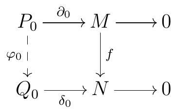
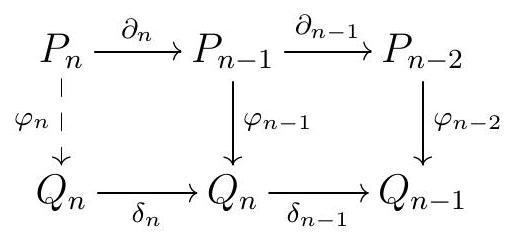
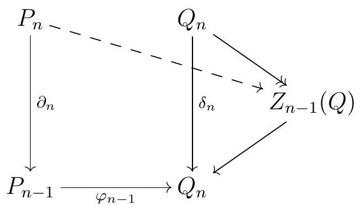
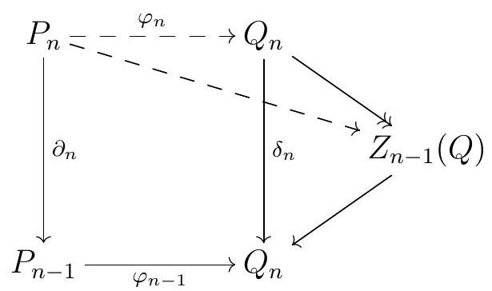
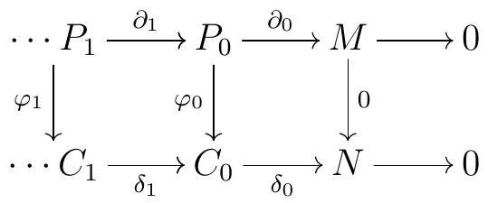
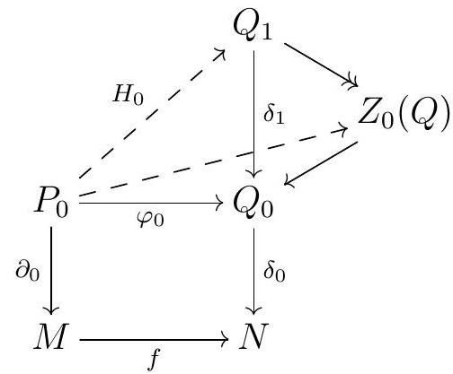
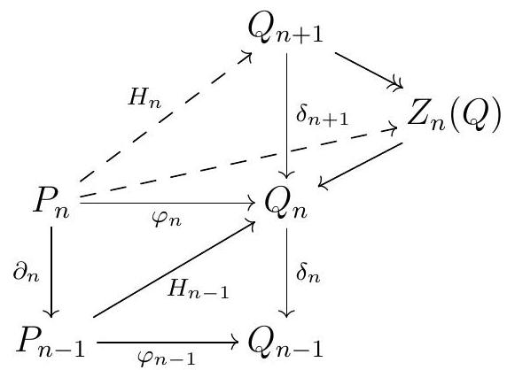

Proof. Since \(P_{0}\) is projective and \(\delta_{0}\) is an epi, there exists \(\varphi_{0}\) such that

commutes.
We proceed inductively, assuming we have \(\varphi_{0}, \ldots, \varphi_{n-1}\) with \(\varphi_{n-2} \partial_{n-1}=\delta_{n-2} \varphi_{n-1}\text{.}\) Since \(P_{n}\) is projective, there exists \(\varphi_{n}\) such that

commutes. Commutativity gives \(\delta_{n-1} \varphi_{n-1} \partial_{n}=\varphi_{n-2} \partial_{n-1} \partial_{n}=0\text{,}\) so \(\varphi_{n-1} \partial_{n}\) factors through the kernel of \(\delta_{n-1}\text{.}\)

Since \(Q\) is a projective resolution of \(N\text{,}\) the arrow \(Q_{n} \longrightarrow Z_{n-1}(Q)\) above is an epi, so the arrow \(P_{n} \longrightarrow Z_{n-1}(Q)\) we just constructed factors through \(Q_{n}\text{,}\) giving us \(\varphi_{n}\) such that

commutes.
Now suppose we are given two such maps of complexes \(\varphi\) and \(\psi\) lifting \(f\text{,}\) say \(\varphi\) and \(\psi\text{.}\) Note that \(\varphi-\psi\) and 0 are two liftings of the 0 map. We are going to show that any map lifting the 0 map \(M \longrightarrow N\) must be nullhomotopic, which will then imply that \(\varphi\) and \(\psi\) are homotopic as well (essentially via the same homotopy!).
So let \(\varphi: P \longrightarrow C\) be a map of complexes lifting the 0 map \(M \longrightarrow N\text{.}\)

We will construct a nullhomotopy for \(\varphi\) inductively. Set \(h_{n}=0\) for all \(n<0\text{.}\) The commutativity of the rightmost square says that \(\delta_{0} \varphi_{0}=0\text{,}\) so \(\operatorname{im} \varphi_{0} \subseteq \operatorname{ker} \delta_{0}=\operatorname{im} \delta_{1}\text{.}\) Since \(\partial_{0} \varpi_{0}=0, \varphi_{0}\) factors through \(Z_{0}(Q)\text{.}\) But \(Q_{1} \rightarrow Z_{0}(Q)\) is an epi and \(P_{0}\) is projective, there exists \(H_{0}\) such that

commutes. So \(H_{0}\) satisfies \(\delta_{0} H_{0}=\varphi_{0}\text{.}\) Set \(H_{-1}=0\text{.}\)
Now suppose we have constructed \(H_{0}, \ldots, H_{n-1}\) such that \(\delta_{n} H_{n-1}+H_{n-2} \partial_{n-1}=\varphi_{n-1}\text{.}\) Then
\begin{equation*}
\begin{aligned}
\delta_{n} \varphi_{n} & =\varphi_{n-1} \partial_{n} & \text { since } \varphi \text { is a map of complexes } \\
& =\left(\delta_{n} H_{n-1}+H_{n-2} \partial_{n-1}\right) \partial_{n} & \text { by assumption } \\
& =\delta_{n} H_{n-1} \partial_{n}+H_{n-2} \partial_{n-1} \partial_{n} & \\
& =\delta_{n} H_{n-1} \partial_{n} & \text { since } \partial_{n-1} \partial_{n}=0
\end{aligned}
\end{equation*}
so \(\delta_{n}\left(\varphi_{n}-H_{n-1} \partial_{n}\right)=0\text{.}\) Therefore, \(\varphi_{n}\) factors through \(Z_{n}(Q)\text{,}\) and since \(Q\) is a projective resolution of \(N, Q_{n+1} \longrightarrow Z_{n}(Q)\) is an epi. Therefore, the factorization of \(\varphi_{n}-H_{n-1} \partial_{n}\) through \(Z_{n}(Q)\) also factors through \(Q_{n}\text{,}\) and we end up with an arrow \(H_{n}\) such that

commutes. This \(H_{n}\) must then satisfy \(\delta_{n-1} H_{n}+H_{n-1} \partial_{n}=\varphi_{n}\text{,}\) and ultimately \(H\) is a homotopy between \(\varphi\) and 0 .